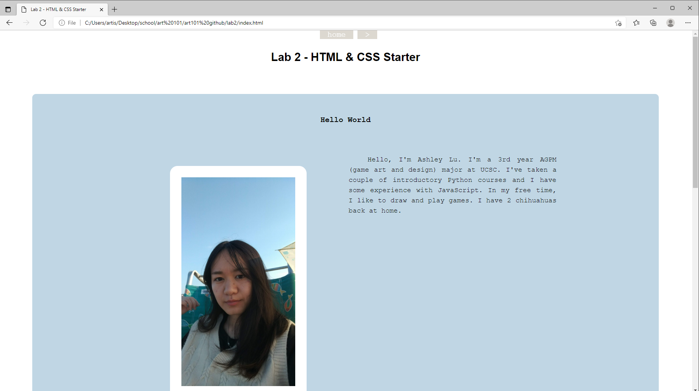

In this lab, we are revisiting older labs and debugging them.
I didn't really have any labs that needed debugging; all my labs work as expected and I'm satisfied with all of them. All I really did was improve the CSS of my Lab 2 to match the CSS of my other pages.
I have a Lab 14 index.html file that is styled with CSS and a nicer looking Lab 2 page :)
Here is a screenshot of my new "debugged" Lab 2 page.
